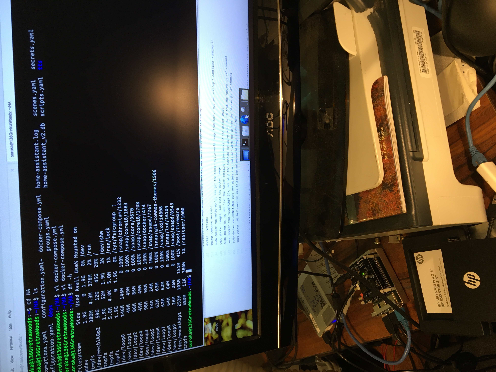
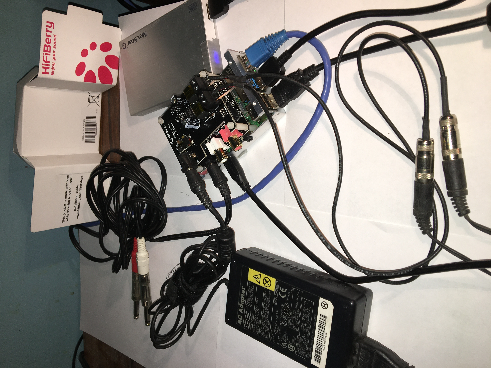
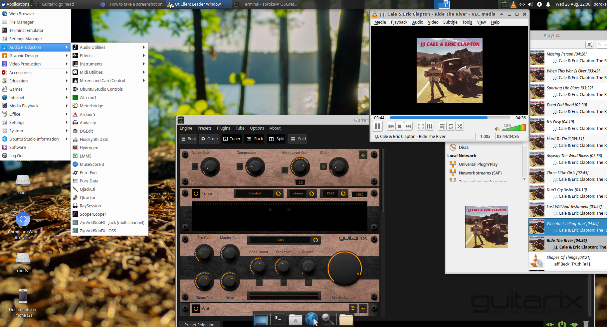

# ######################################################################
This is a working document of the progress on my PI project not all items are working, some text was taken from other users and adapted to run on UB 20.04 64bit, I shall add links to the original document to give credit to the original authors, please forgive me if I missed a link... work in progress. The only editor I use is vi feel free to use your favorite except for those from Mickysoft that add extra unseen characters to the end of the line. This file located at: This WebSite: https://soroka-repo.github.io/pi/ Text: https://github.com/soroka-repo/pi/docs/README_UBUNTU_20.04-64bit HTML: https://github.com/soroka-repo/pi/docs/index.html Note: the website "https://soroka-repo.github.io/pi/" if I update the website it seems github can take up to an hour to republish the page if the website is down (github 1 hour publish time) and you need access you will have to download the file for the webpage from github https://github.com/soroka-repo/pi/docs/index.html Note: just trying to add pictures to this webpage... still not working yet ###################################################################### #
# ######################################################################
_X_ Raspberry PI 4, Model B, 4GB SDRAM, added heatsinks and aluminum case, USB keyboard and mouse, HDMI cable and monitor, The aluminum case did not work with the wifi, with a aluminum case you will need an external wifi antenna which I may add but waiting to get the HIFIBerry in, which will sit on top of the PI so may need a new case... _X_ Power supply: Tried a Apple USBC power supply 5.0 @ 2.4A but PI recommends a 3.0A so may need an upgrade waiting for the HIFIberry to come in since that may also drive a bigger supply Now using an old IBM laptop supply 16V @3.36A plugged into the HIFIberry AMP and it powers it all _X_ 64G microSD card current boot device _X_ 1TB SATA III disk drive in a SATA to USB 3.0 case media storage (future part of the RAID storage) Western Digital 1TBWD10SPZX SATA 6g/s in a NexStar 6g/b SATA to USB3 case Model NST-266S3 _X_ HIFIBerry Audio upgrade: DAC+ ADC Pro $64, AAMP60 $49 Upgrades: X=in use O=ordered, R=received, L=Looking _R_ 500G SATA III SSD drive, in a SATA III to USB 3.0 case to replace the 64G microSD card as the boot device _R_ Cooling fan, but waiting for the hifiberry to arrive to figure out placement _L_ USB switch with extra power to support future RAID setup
raspberrypi.jpg

_X_ docker running: - Docker allows you to use Containers- prepackaged applications the building blocks of the Cloud _P_ HomeAssistant - Smart Home Automation - installed on docker , running internal website - needs SSL and DNS to run external website Need to add WireGuard to help with securing an external websight... _U_ Wireguard - _U_ Plex - Media server / steamer - not installed yet will try to use docer for the install _X_ Ubuntu Studio for high end audio and image processing, installed seem to go good, just tested "Hydrogen Advance Drum Machine" so far... ###################################################################### #
# ######################################################################
# or use to update other pi(s) it's free
# and the README instuctions ###################################################################### #
# ######################################################################
# write the ubuntu-20.04-preinstalled-server-arm64+raspi.img.xz to the SD card # grab the image from the Raspberry PI site and use your search engine to find the correct way to flash the image to the SD card Ubuntu Download: https://ubuntu.com/download/raspberry-pi
ip addr;
# (yes everyone else uses apt-get but why type the extra characters when apt works just fine) sudo su; apt update; apt upgrade; ### upgrade may fail with a lock (Waiting for cache lock:) due to UB's auto upgrade running just keep trying "apt update" or just ### leave the apt upgrade looping with the waiting message (it will start when it can)
# # xubuntu-desktop - recommended DeskTop # net-tools - network tools like ifconfig # ksh - korn shell # clonezilla - copy disk image lets you upgrade from a microSD to SSD boot # sudo su; apt install xubuntu-desktop net-tools ksh clonezilla -y; # during the install xubuntu-desktop will ask gdm3 or lightdm pick gdm3 apt install ubuntu-restricted-extras; ### install media codecs, fonts... all the stuff that UB does not like to install because it may not be completely open source
# it seems like the default screen-saver "light-locker" does not work well with the PI (not sure why) and hangs the GUI, so lets remove it # and add "xscreensaver" which seems to work fine with the PI # sudo su; apt remove light-locker light-locker-settings; apt install xscreensaver;
reboot; # at the login screen at the upper right you will find an ICON that will allow you SWITCH Desktops # select xubuntu it seems to work the best
# example will show userid "joeuser" (sudstitute your ID for joeuser), this is for security the hackers will try "ubuntu" # WARNING: screw this up and you will not be able to log in, but you can re-flash your SD and try try again grep joeuser /etc/passwd; ### this is a check to see if you are picking a userid that is unused, if grep returns nothing you are ### good to use your selected userid "joeuser" sudo su; cd /etc; for i in "passwd" "group" "shadow" "gshadow"; do sed 's/ubuntu/joeuser/g' -i $i; done; ### change "ubuntu" to "joeuser" sed 's/Ubuntu/joeuser/g' -i /etc/passwd; ### Change the default login ftom "ubuntu" to "joeuser" mv /home/ubuntu /home/joeuser; ### move the "ubuntu" home dir to "joeuser" reboot; ### just to make sure you did it correctly and we can still log on otherwise it's a re-flash
# so it will always be the same, I have 2 networks one for wired and one for wireless # the raspberry PI is connected to both networks and the default gateway (routes) are set to work if either # network is down or both up # # # list network interfaces of the PI just to see what you have ls /sys/class/net; ifconfig -a; ### check out your mac address ("ether" under "eth0" is your mac address) # use netplan (see: man netplan) to configure the nework it will support all the possible network configurations that you can think of # allow NetworkManager to manage netplan it works well with the extra networks docker will add. Move /etc/netplan/50-cloud-int.yaml to # /etc/netplan/01-netcfg.yaml or remove the 50-cloud-int.yaml we only want 01-netcfg.yaml in the /etc/netplan dir. sudo mv /etc/netplan/50-cloud-init.yaml /etc/netplan/01-netcfg.yaml; sudo vi /etc/netplan/01-netcfg.yaml; ### change it from: to: observing correct yaml column formatting
EXAMPLE: From: cat /etc/netplan/01-netcfg.yaml UB's default
network: ethernets: eth0: dhcp4: true optional: true version: 2
###to: this is what I have, change the IPs addrs as needed, replace the XXXX.. in wlan0 with your WIFI network and password # change the mac address to your mac in the match this is here to make sure eth0 name got changed on boot # change the routes and nameserver ip from 192.168.2[3].1 to your correct gateway, first time editing a *.yaml file the # leading indents/spaces must be perfect (oh dreams of COBOL coding long long ago) ### for eth0: # change "macaddress: dc:a6:32:XX:XX:XX" ### replace the XX:XX:XX with your mac address # change "addresses: [192.168.2.100/24]" ### change to a IP on your wired network "/24" = a netmask of 255.255.255.0 # change "addresses: [192.168.2.1,8.8.8.8]" ### change 192.158.2.1 to your gateway/router # change "via: 192.168.2.1" ### change 192.158.2.1 to your wired gateway/router ### for wlan0: # change "addresses: [192.168.3.100/24]" ### change to a IP on your wireless network "/24" = a netmask of 255.255.255.0 # change "addresses: [192.168.3.1,8.8.8.8]" ### change 192.168.3.1 to your gateway/router # change ""XXXXXX":" ### change the XXXXXX to the name of your wireless network # change "password: "YYYYYYY"" ### change the YYYYYYY to the password of your wireless network # change "via: 192.168.3.1" ### Change 192.168.3.1 to your wireless gateway/router
EXAMPLE: TO: cat /etc/netplan/01-netcfg.yaml your ne config
network: version: 2 renderer: NetworkManager ethernets: eth0: match: macaddress: dc:a6:32:XX:XX:XX addresses: [192.168.2.100/24] nameservers: addresses: [192.168.2.1,8.8.8.8] optional: true routes: - to: 0.0.0.0/0 via: 192.168.2.1 metric: 100 wifis: wlan0: dhcp4: no addresses: [192.168.3.100/24] nameservers: addresses: [192.168.3.1,8.8.8.8] optional: true access-points: "XXXXXX": password: "YYYYYYY" routes: - to: 0.0.0.0/0 via: 192.168.3.1 metric: 100
netplan apply; ### this will test and apply your new /etc/netplan/01-netcfg.yaml network config file #or* netplan try; ### this will try it and then roll it back if you messed up. nice if you are working remote to the server(PI)
STEP: ___ change the hostname
# from: ubuntu to: something meaningful to you, this is also for security the hackers will look for hostname "ubuntu" # it will tell them right away what OS you are running hostnamectl set-hostname <new_host_name> # you should now have a working PI computer ready to compete with any laptop,desktop,phone,tablet,server,cluster,super computer... ###################################################################### #
PROCEDURE: HIFIBerry audio upgrade ADC +DAC Pro and AMP60
# ###################################################################### HiFiBerry: https://www.hifiberry.com/
PI-HiFiBerry.jpg

STEP: ___ Turn off the PI's Audio
# in file /boot/firmware/syscfg.txt comment out the line dtparam=audio=on
EXAMPLE: cat /boor/firmware/syscfg.txt
# This file is intended to be modified by the pibootctl utility. User # configuration changes should be placed in "usercfg.txt". Please refer to the # README file for a description of the various configuration files on the boot # partition. enable_uart=1 ###dtparam=audio=on dtparam=i2c_arm=on dtparam=spi=on cmdline=cmdline.txt
STEP: ___ Add the HIFIBerry drivers to the /boot/firmware/usercfg.txt
EXAMPLE: cat /boot/firmware/usercfg.txt
# Place "config.txt" changes (dtparam, dtoverlay, disable_overscan, etc.) in # this file. Please refer to the README file for a description of the various # configuration files on the boot partition. dtoverlay=hifiberry-dacplusadcpro
STEP: ___ Reboot then Test
sudo su; reboot; # check for the loaded hifiberry modules with lsmod|grep hifi
EXAMPLE: lsmod|grep hifi;
snd_soc_hifiberry_dacplusadcpro 20480 4 snd_soc_core 258048 4 snd_soc_pcm512x,snd_soc_pcm186x,snd_soc_bcm2835_i2s,snd_soc_hifiberry_dacplusadcpro snd_pcm 143360 9 snd_soc_pcm512x,snd_soc_pcm186x,snd_soc_bcm2835_i2s,snd_soc_hifiberry_dacplusadcpro,snd_pcm_oss,snd_soc_core,snd_pcm_dmaengine clk_hifiberry_dacpro 16384 1
# check aplay command line player with aplay -l
EXAMPLE: aplay -l
**** List of PLAYBACK Hardware Devices **** card 0: sndrpihifiberry [snd_rpi_hifiberry_dacplusadcpro], device 0: HiFiBerry DAC+ADC Pro HiFi multicodec-0 [HiFiBerry DAC+ADC Pro HiFi multicodec-0] Subdevices: 0/1 Subdevice #0: subdevice #0
# adjust you don't want to blow your speakers out at first try bring it down to 80% amixer sget Digital ### get amixer sset Digital 80% ### set # Create /etc/asound.conf with the following content:
EXAMPLE: cat /etc/asound.conf;
pcm.!default { type hw card 0 } ctl.!default { type hw card 0 }
# try alsamixer; mplayer;
STEP: add the pulse equalizer
sudo su; apt install pulseaudio-equalizer; ### install pulse eq ### the following 2 lines to the "/etc/pulse/default.pa" file without the # (comment) the following echo line will do it for you # load-module module-equalizer-sink # load-module module-dbus-protocol echo -e "### add for pulse equalizer \nload-module module-equalizer-sink \nload-module module-dbus-protocol" >> /etc/pulse/default.pa exit; ### logout of sudo su (root id) and back into your userid pulseaudio --kill && pulseaudio --start; ### reload pulseaudio qpaeq; ### start the equalizer ### from the upper right hand volume ICON click on the "Audio mixer..." click "Playback" and switch click the box next to what is playing ### and change it to "FFT based equalizer on jack sink (PulseAudioAudio JACK Sink)" Just drag the qpaeq window wider to increse the bands in the eq sudo ln -sf /usr/bin/qpaeq /usr/bin/eq; ### create a link so you can just type "eq" since I can't remember "qpaeq" eq; ### to start the equalizer with the link eq&; ### to start the eq in backround so you get your terminal back note: it will still post "saving state" to your terminal if you make changes ###################################################################### #
PROCEDURE: Install Ubuntu Studio for Audio (debug method)
# ######################################################################
STEP: ___ Install UBStudio for Audio
# lets just first install just the parts of ubuntu studio for audio sudo su; apt show ubuntustudio-audio; ### and gather up the Reccomends and form the following install command apt install ubuntustudio-audio ardour audacity cdrdao csound dgedit drumgizmo fluid-soundfont-gm fluidsynth guitarix hydrogen hydrogen-drumkits jamin kid3-qt lmms multimedia-puredata musescore3 petri-foo phasex puredata qsynth qtractor rakarrack sooperlooper whysynth yoshimi; ### during the install the following were suggested/recommented, more investigation on these before we install them...: Suggested packages: ladish ffmpeg-doc fluid-soundfont-gs timidity v4l2loopback-dkms | v4l2loopback-modules hydrogen-drumkits-effects jack-rack muse rosegarden jalv jcgui lame-doc gsl-ref-psdoc | gsl-doc-pdf | gsl-doc-info | gsl-ref-html libid3-tools liblo-dev liblrdf0-dev libmagickcore-6.q16-6-extra qt5-image-formats-plugins qtwayland5 qt5-qmltooling-plugins freepats ams mplayer-doc camomile pd-abstractions pd-acid-core pd-acre pd-adaptive pd-algobreaks-core pd-bandlimited pd-blockhead pd-cicm pd-container pd-cream pd-ehu pd-hoa pd-iemgui pd-kalman pd-midi-guis pd-msd pd-netro pd-oscbank pd-rtcmix pd-s-abstractions pd-search-plugin pd-sssad pd-timeline pd-vasp pd-scaf arduino | arduino-mk couchdb pd-aubio python-dbus-dbg python-dbus-doc python-gi-cairo python-altgraph-doc graphviz python-future-doc python3-numpy pyliblo-utils python-liblo-docs python-macholib-doc python-ply-doc python3-pyqt5-dbg tcl-tclreadline tcllib-critcl carla Recommended packages: libmxml-bin lmms-vst-server:i386 pd-aubio pd-py pd-scaf transcode ### during the install answer the question "yes" select realtime, you will need the realtime kernel for the high end audio apps ### all apps installed to open them click: Applications, Multimedia
STEP: ___ Reboot and test what works
# so lets try it see what is does... reboot to pick up the realtime settings. reboot; ### Ref: UB Studio: https://ubuntustudio.org/tour/audio/ Handbook: https://help.ubuntu.com/community/UbuntuStudio/AudioHandbook # "Carla" - seems to be missing have to figure out how to install... # "Hydrogen Advance Drum Machine" - works, sounds excellent, Click: Applications, Multimedia, Hydrogen, Project, Open Demo, pick one then Open,then click ||> (pause/play button) # "Yoshimi synth" - works, tested using the virtual keyboard # "Rakarack effects rack" - turn FX on upper left, crashed a few times with the default setting more work needed with settings # "guitarix amps + effects" - works nice,tuner works well ###################################################################### ##
PROCEDURE: Install Ubuntu Studio for Audio (eaiser method)
## #######################################################################
UBStudio.png
 #
STEP: ___ Install UBStudio for Audio
# sudo su; apt install ubuntustudio-installer; ### install the installer # click on "Applications" (upper left ICON), "System", "Ubuntu Studio Installer" "Audio" and answer "Yes" to the Realtime question ###################################################################### #
PROCEDURE: Install and setup docker
# ######################################################################
STEP: ___ install docker
sudo su; apt install python3 python3-dev python3-venv python3-pip libffi-dev libssl-dev autoconf build-essential -y; ### install pre-reqs for home assistant apt install snap -y; snap install docker;
STEP: ___ disable UB's cloud-init
# disable UB's Cloud-init which seems to hang things up some/most of the time # create the file /etc/cloud/cloud.cfg.d/99-disable-network-config.cfg # with just the line network: {config: disabled} # this is needed to keep the cloud config stuff from trying to reconfigure the network #
EXAMPLE: cat /etc/cloud/cloud.cfg.d/99-disable-network-config.cfg
network: {config: disabled}
# create the empty file /etc/cloud/cloud-init.disabled sudo touch /etc/cloud/cloud-init.disabled; sudo systemctl cloud-init stop; sudo systemctl cloud-init disable; # reboot and test if your network works reboot;
STEP: ___ test docker install
exit; ### exit from the sudo su root session, try the following commands from your userid not root systemctl status snap.docker.dockerd.service; ### check that docker is running docker --version; docker-compose version; sudo docker run hello-world; ### get the docker hello-world image from docker hub and startup a container running it sudo docker images; ### list the docker image sudo docker ps -a; ### list the docker container (instance) of the docker image sudo docker stop <CONTAINER ID> ### stop the runnning container with the ID from the "docker ps -a" command sudo docker rm <CONTAINER ID> ### delete the container with the ID from the "docker ps -a" command sudo docker rmi hello-world; ### delete the hellow-world image (REPOSITARY)
STEP: ___ run Home Assistant
# this is just the first attempt we need to build a app stack with docker-composre, lets just take a look... mkdir -p ~/HA; ### the tilda is your home directory or whereever you are going to put HA cd ~/HA; vi docker-compose.yml; ### create the following observing yaml column formatting
EXAMPLE: cat docker-compose.yml
version: '3' services: homeassistant: container_name: home-assistant image: homeassistant/raspberrypi4-homeassistant:stable volumes: - /home/soroka/HA:/config - /etc/localtime:/etc/localtime:ro environment: - TZ=America/New_York restart: always network_mode: host healthcheck: test: ["CMD", "curl", "-f", "http://127.0.0.1:8123"] interval: 30s timeout: 10s retries: 3
sudo docker-compose up -d; ### execute from the dir the above yaml file is in to start up the instance ### to restart use: sudo docker-compose restart; ### to restart Home Assistant ### to rebuild: sudo docker-compose pull; sudo docker-compose up -d --build homeassistant ### to get to homeassistant your IP port 8123 (find your IP = ifconfig or ip addr) http://<your IP addr>:8123 #or http://127.0.0.1:8123 ### local ip ### create your userid and password, select your map location,click in the notification tab to see if any Home devices were found and configure them.
STEP: ___ try a differeint level of home assistant moving from stable to latest and add portainer to view your docker images/instances with a GUI
cd ~/HA; sudo docker-compose stop; ### stop home assistant instance ### if you want a do-over do the next step rm for remove your instance and configuration file sudo docker-compose rm; ### remove the home assistant instance, this will also delete the HA /config files ### DO NOT DO the rm command unless you want to start over vi docker-compose.yml; ### change the following stable to latest observing the yaml column formatting add portainer
EXAMPLE: cat docker-compose.yml
version: '3' services: homeassistant: container_name: home-assistant image: homeassistant/raspberrypi4-homeassistant:latest volumes: - /home/soroka/HA:/config - /etc/localtime:/etc/localtime:ro environment: - TZ=America/New_York restart: always network_mode: host healthcheck: test: ["CMD", "curl", "-f", "http://127.0.0.1:8123"] interval: 30s timeout: 10s retries: 3 portainer: container_name: portainer image: portainer/portainer ports: - 9000:9000 volumes: - /home/soroka/portainer:/data:rw - /var/run/docker.sock:/var/run/docker.sock restart: "always"
### rebuild and start up the image sudo docker-compose pull; sudo docker-compose up -d --build homeassistant;
STEP: ___ portlander is a gui to view your docker status use a webbrowser to get to port 9000 and setup a userid/password
# 127.0.0.1:9000 ### use a webrowser for portlander it's port 9000 on your local IP
STEP: ___ add node-red graphical scriping language to HomeAssistant
# mkdir -p ~/nodered; # add node-red to the docker-compose.yml vi docker-compose.yml; ### adding node-red scripting language
EXAMPLE: cat docker-compose.yml
version: '3' services: homeassistant: container_name: home-assistant image: homeassistant/raspberrypi4-homeassistant:stable volumes: - /home/soroka/HA:/config - /etc/localtime:/etc/localtime:ro environment: - TZ=America/New_York restart: always network_mode: host healthcheck: test: ["CMD", "curl", "-f", "http://127.0.0.1:8123"] interval: 30s timeout: 10s retries: 6 portainer: container_name: portainer image: portainer/portainer ports: - 9000:9000 volumes: - /home/soroka/portainer:/data:rw - /var/run/docker.sock:/var/run/docker.sock restart: "always" node-red: container_name: node-red image: nodered/node-red-docker:rpi-v8 ports: - 1880:1880 volumes: - /home/soroka/node-red:/data - /etc/localtime:/etc/localtime:ro - /etc/timezone:/etc/timezone:ro restart: "no" # because the exit code(s) are wrong depends_on: homeassistant: condition: service_healthy healthcheck: test: ["CMD", "curl", "-f", "http://127.0.0.1:1880"] interval: 30s timeout: 10s retries: 5
### rebuild cd ~/HA; sudo docker-compose stop; ### stop home assistant instance ### rebuild and start up the image sudo docker-compose pull; sudo docker-compose up -d; # install the node-red admin tool sudo apt install npm -y; sudo npm install -g node-red-admin; # setup node-red password cd ~/nodered; node-red-admin hash-pw; ### enter a new password for node-red and copy the returned hash
EXAMPLE: node-red-admin hash-pw
Password: $2a$0zI2SzwCq2lmU7WJjNcCnD.eQkrM5PhX40LJXFfo2DOqZo..qxxdiS
# In file ~/nodered/settings.js search for 'adminAuth" section, uncomment it and put in the hash
EXAMPLE: was the default cat ~/nodered/settings.js;
// Securing Node-RED // ----------------- // To password protect the Node-RED editor and admin API, the following // property can be used. See http://nodered.org/docs/security.html for details. //adminAuth: { // type: "credentials", // users: [{ // username: "admin", // password: "$2a$08$zZWtXTja0fB1pzD4sHCMyOCMYz2Z6dNbM6tl8sJogENOMcxWV9DN.", // permissions: "*" // }] //},
EXAMPLE: after your edit cat ~/nodered/settings.js;
// Securing Node-RED // ----------------- // To password protect the Node-RED editor and admin API, the following // property can be used. See http://nodered.org/docs/security.html for details. adminAuth: { type: "credentials", users: [{ username: "admin", password: "$2a$0zI2SzwCq2lmU7WJjNcCnD.eQkrM5PhX40LJXFfo2DOqZo..qxxdiS", permissions: "*" }] },
# save the file and restart node-red and login to node-red on port 1880 of yout local IP cd ~/HA; sudo docker-compose restart nodered; http://127.0.0.1:1880 ### enter username= admin and the password you created above # create a file panel_iframe.yaml so node-red will be available on the left side of HomeAssistant vi ~/HA/configuration.yaml ### and add the following to the bottom of the file (YAML: watch the indents/spacing) panel_iframe: nodered: title: 'Node-Red' url: 'http://127.0.0.1:1880' icon: mdi:nodejs ### the file should now look like
EXAMPLE: cat ~/HA/configuration.yaml
# Configure a default setup of Home Assistant (frontend, api, etc) default_config: # Text to speech tts: - platform: google_translate group: !include groups.yaml automation: !include automations.yaml script: !include scripts.yaml scene: !include scenes.yaml panel_iframe: nodered: title: 'Node-Red' url: 'http://127.0.0.1:1880' icon: mdi:nodejs
# restart HomeAssistant to pick up the node-red icon sudo docker-compose restart homeassistant; ### follow instructions at for help setting up nodered NodeRed HomeAssistant https://smarthome.university/home-assistant/node-red/installing-node-red-with-home-assistant/ Connecting Node-RED to Home Assistant Connecting Node-RED to HA is as easy as loading the proper modules into Node-RED. On the Node-RED webpage, click the hamburger button in the upper-right corner and select "Manage palette". Click the "Install" tab Where it says "search modules", enter "home-assistant" You want the one that says "node-red-contrib-home-assistant-websocket", currently at version 0.1.3 Click the install button Click the install button on the warning that pops up When you see a green box pop up, listing the new nodes that are added to the palette, it's done installing. The first time you try to use the Home Assistant nodes, there will be errors. This is normal. Errors will be thrown and HA entity names will not show up automatically until the nodes are properly configured (pointing at your HA install with http://YOUR.PI.IP.ADDRESS:8123 and a Long-Lived Access Token) AND you hit "Deploy" at the upper-right. You get a Long-Lived Access Token from Home Assistant by clicking on the round Profile button in the upper left of the HA interface. If the username you created in HA is "Bob", you should see a circle around a "B". Click that. At the bottom of the profile page, you'll see an option to create a Long-Lived Access Token. Give it a meaningful name, like "Node-RED", and copy the text of the token. Paste this text into the "Edit server node" section of Node-RED, where it says "Access Token". Use of Node-RED for HA automation is for another discussion, but at least now you can get started. :-)
STEP: ___ Add organizer
mkdir -p /opt/organizr;
STEP: ___ Add dockermon
mkdir -p /opt/dockermon; ###################################################################### #
PROCEDURE: UB 20.04 DEBUGGING ERRORS on the PI-4 4g mem
# ###################################################################### # Do each of the following steps to correct problems with the PI-4 running UB 20.04
STEP: DEBUGGING: conserve mem
## ___ install google chromium, chromium uses about 10M per tab compared firefox 100M / tab of mem usage sudo apt update; sudo apt install chromium-browser;
STEP: DEBUGGING: DT hang and conserve mem
# ___ xubuntu running gdm3 is hanging or going blank when running gdm3 # switch the desktop from gdm3 to lightdm the xubuntu desktp keeps freezing when you leave it inactive???? #recover from a hung desktop <ctrl><alt>f3 login and run sudo systemctl restart gdm <ctrl><alt>f1 ### to log back into the gui # FIXED: change from gdm to lightdm and see it that hangs sudo dpkg-reconfigure lightdm; reboot; ## lightdm is also using less mem also better for the PI ## the mem usage has dropped with lightdm to 1G while gdm3 was using about 3.5G so much better
STEP: DEBUGING: DT hang
# ___ lightdm no mouse click or keyboard input # it seems like the screensaver is what is broken # ### FIXED: install xscreensaver and turn off lightdm's screensaver it's buggy with the PI maybe problems with powersaver on the PI... apt install xscreensaver xscreensaver-data-extra; systemctl restart lightdm; #turn off light locker settings go to Applications Settings Light Locker Settings ### turn it off #turn on xscreensaver Applications Settings screensaver # set the mode "Blank or Only One or Ransom", set the time "Blank After x minutes" ### remove the light-locker screen saver apt remove light-locker light-locker-settings
STEP: DEBUGGING: wifi network down
# ___ noticed wifi interface is down overnight # restart network systemctl restart NetworkManager # wlan0 network is back up, Maybe it was the buggy light locker screensaver putting the wifi in power save mode # wait and see... still gone while using xscreensaver... lets see if it goes away at screen saver time??? nope # OUCH: is it my nice aluminum case the PI is in messing up the wifi signal??? case is open now see what happens... # looking better oh well the case has to go when the hifiberry hat arrives, maybe need to add a U.FL connector # and an external wifi antenna.... ###################################################################### #
PROCEDURE: NEW options to figure out:
# ######################################################################
STEP: ADD: wireguard = is the VPN for UB20 apt install wireguard, and there are docker images
STEP: Complete: the hifiberry PRO ADC/DAC and AMP when it arrives
STEP: ADD: Plex with docker, add a better mount for the USB drive
STEP: ADD: get the PI-4 to boot with a USB 3.0 SATA III SSD without the SD card
STEP: ADD: swap space on the SSD for the PI
STEP: ADD: cooling fan and overclock
STEP: ADD: external uFL wifi connector
STEP: ADD: is the bluetooth working???? may need an antenna to extend it's range it works better with case lid off